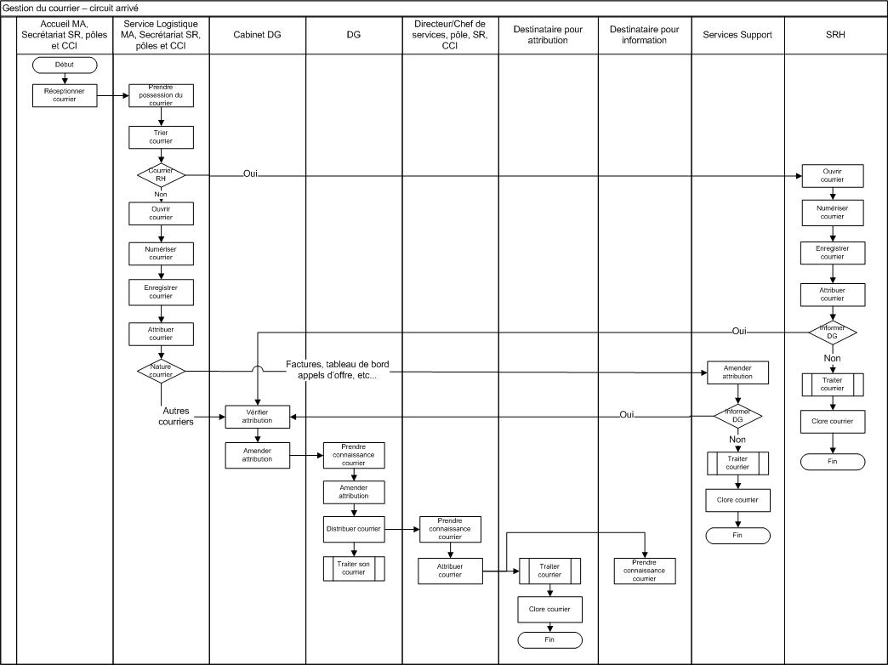
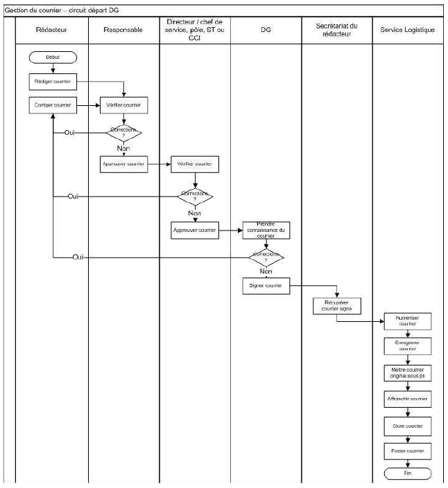
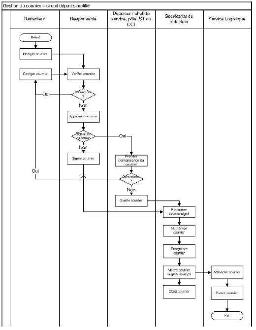

Le cahier des charges décrit 3 processus :

Une fonction d’information du Cabinet DG permettra un retour de l’attribution faites à un service avec un commentaire de justification. Le courrier sera alors de nouveau visible dans la console de consultation du 'cabinet DG'.
Une fonction de clôture de courrier permettra d’indiquer que le courrier a été traité.\ Une fonction de lien entre courriers permettra de suivre y compris la réception de courrier due à un courrier précédent.
Une fonction de suivi de l’avancement du traitement du courrier 'arrivée' est aussi à mettre en place


Le processus de gestion de courrier implémenté par Blue Courrier se décompose en 3 processus :
Cette distribution comporte :
Le processus manuel permet de réaliser l'action suivante :
Le processus informatisé permet de réaliser les actions suivantes :
préparer la distribution:
remplir la fiche d'indexation : indiquer toutes les informations sur le courrier arrivé (dates, délai, priorité, catégories, expéditeur, destinataire, pièces jointes, commentaires) ;
indiquer le service destinataire du courrier et les services éventuels en copie ;
distribuer : valider la distribution ;
(ré)assigner : indiquer l'agent/collaborateur chargé du traitement du courrier ;
instruire : créer et ajouter une ou plusieurs réponses au courrier arrivé. Chaque réponse suivra son propre processus. Cette réponse est visible dans un fil de discussion ;
mettre en validation : faire partir le courrier en validation par le responsable du service ;
terminer le traitement : clôturer le courrier pour indiquer qu'aucun traitement n'était nécessaire. Cette action ne peut être réalisée que par un service métier et non par le service courrier.
La distribution des courriers est validée par le cabinet 'DG'.
Le processus de validation permet de réaliser les actions suivantes :
indiquer le responsable suivant : si aucune responsable n'est indiqué alors la validation est finale, sinon cela permet de faire valider par une autre personne (par exemple le n+1)
valider : l'approbation ne nécessite pas de commentaire
refuser : un commentaire doit obligatoirement être joint pour refuser un document
Le processus de sortie permet de réaliser les actions suivantes :
faire valider une réponse au responsable du service : le responsable de service est celui qui par défaut valide la réponse de son service
faire valider une réponse à un autre responsable : le processus de validation peut être répété
imprimer le courrier
faire signer le courrier
numériser le courrier
marquer comme envoyé